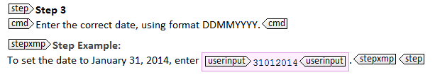
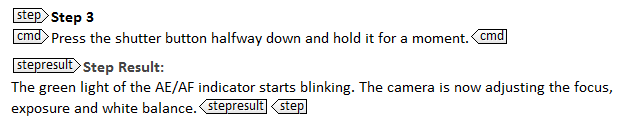
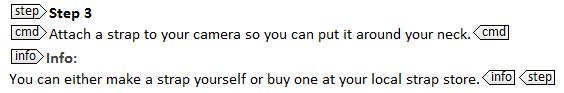
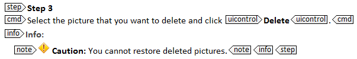

---
# Generated from DITA source
layout: default
title: "Adding extra info to a step: <stepxmp>, <stepresult>, <info> and <note> "
index: "../toc.html"
---
Adding extra info to a step: <stepxmp>, <stepresult>, <info> and <note>
DITA provides a series of elements that allow you to add extra info to your steps. The most common and useful ones are <stepxmp>, <stepresult>, <info> and <note>.
<stepxmp>
If you want to provide an example of what to do in a particular (sub)step, use the <stepxmp> element. An example helps users understand how to complete the step.

<stepresult>
If you want to describe the outcome of a particular action, use the <stepresult> element. By adding a result, you can assure users that they are still on the right track. This is especially useful when the result of a step is somewhat strange or worrying.

CAUTION: Do not add a <stepresult> to each step and do not use it to point out obvious results. For example, in software documentation do not use it to indicate that a particular dialog is displayed: users see the dialog on their screen when they are executing the task. If you think the users might get confused about where they are in the interface, you can always start the next step by pointing out which dialog they have to use (e.g. "In the Save as dialog, enter a name for your file and click Save").
<info>
If you want to add extra information to a step that does not fit in the <stepxmp> or <stepresult> element, you can use the <info> element. Be careful, however, not to include long conceptual information or extra instructions in the <info> element. All instructions have to be written in a <cmd> element.

Tip: Use the <info> element as a container element for other elements. This is especially useful for elements that cannot be directly inserted into a <step> element (<note>, <fig>, <image>...).
<note>
If you want to add a remark to a step, such as a warning or a tip, use the <note> element. Because a <note> element cannot directly be inserted into a <step> element, you have to wrap it in an <info> element.

When you insert a <note> element, use the @type attribute to specify which type of note it is. Based on this attribute, a different label can be inserted in front of the note when you publish your topic. The most common types of notes are:
Type
Description
Note
General information (not a hazard statement) to which you want to call attention
Notice
A potential hazardous situation which, if not avoided, may result in property damage or in an undesirable result or state
Caution
A potentially hazardous situation which, if not avoided, may result in minor or moderate injury
Warning
A potentially hazardous situation which, if not avoided, could result in death or serious injury
Danger
An imminently hazardous situation which, if not avoided, will result in death or serious injury
Tip
A helpful piece of advice
Tip: The differences between notices, cautions, warnings and dangers are defined in the ANSI Z535 and ISO 3864 standards. These slight differences, however, are not always meaningful to the user. If your documentation does not have to comply with ANSI Z535 or ISO 3864, you do not have to apply the different labels as strictly. For example, you can use @type="caution" to call attention to all sorts of hazardous situations.